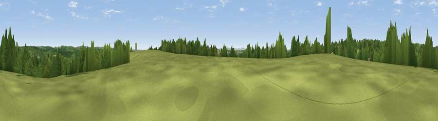

Viewpoint near Balcombe
#36259 in England · top 65% of its area beats it · near BalcombeThe view, rendered

A 360° render of this exact spot computed from the terrain model, tree cover and land cover — summer colours, afternoon light, calibrated against photographs of famous viewpoints. Real trees, hedges and buildings will differ in detail.
The panorama
Grey silhouette: terrain skyline in each direction (720 bearings, Earth curvature and refraction included). Dashed green: skyline with trees (+15 m) and buildings (+8 m) as obstacles. Blue strip: how far the ground is visible on each bearing.
Where the view opens
Wedge length = distance to the farthest visible ground on that bearing (vegetation-aware). Rings at 10, 25 and 50 km.
What fills the view
52% woodland · 37% grassland · 9% cropland · 2% built-up
Angular shares of the visible panorama (visual magnitude), not map area. Landscape diversity 0.43 (0–1 Shannon).
Key numbers
More beautiful places nearby
The staircase of upgrades: each row has a higher view potential than everything closer. Driving times are estimates from straight-line distance, calibrated against real road routing — check an actual route before setting out.
| Place | Direction | Drive | Score |
|---|---|---|---|
| Viewpoint near Balcombe | ESE · 1 km | ~2 min | 49.7 |
| Viewpoint near Turners Hill | NE · 5 km | ~11 min | 49.9 |
| Viewpoint near Turners Hill | NE · 8 km | ~15 min | 51.6 |
| Viewpoint near Kingsfold | WNW · 13 km | ~24 min | 55.0 |
| Wolstonbury Hill | S · 16 km | ~29 min | 79.6 |
| Viewpoint near Westmeston | S · 17 km | ~30 min | 81.1 |
| Ditchling Beacon | S · 18 km | ~30 min | 81.8 |
| Fulking Hill | SSW · 20 km | ~34 min | 82.2 |
51.05635, -0.15538 · source: screening · position refined by local search. Computed location — check access rights before visiting.